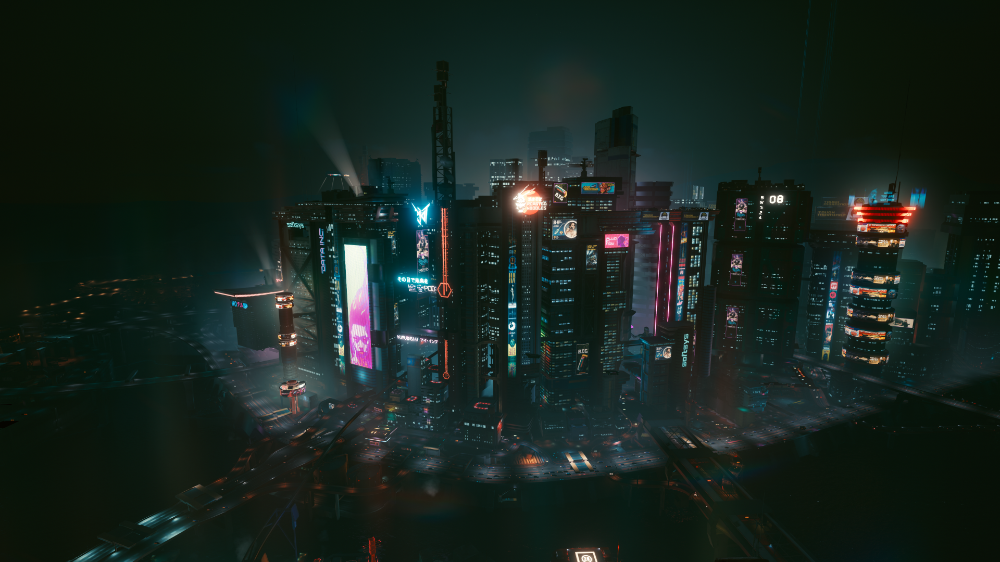

El Peor Lugar para Vivir en América
Te damos la bienvenida a Night City, una megalópolis hipertecnológica ubicada en el Estado Libre del Norte de California que desafía los límites de la civilización moderna. Aquí, el autodenominado "sueño americano" no se construye con esfuerzo, sino que se compra a plazos con cromo, eurodólares, implantes ilegales y la sangre de quienes caen en el pavimento. Bajo un cielo permanentemente teñido de smog y luces de neón parpadeantes, la supervivencia diaria es un deporte de alto riesgo donde la única constante es que la vida humana tiene un precio cotizado en bolsa.

Historia, Utopía y Decadencia
Fundada en el año 1994 por el empresario visionario Richard Night, la ciudad fue concebida inicialmente como una utopía corporativa libre de las ataduras, la corrupción y las regulaciones de los gobiernos tradicionales. Sin embargo, tras el misterioso asesinato de su creador, el sueño original colapsó rápidamente, abriendo paso a un vacío de poder que las megacorporaciones no tardaron en capitalizar con mano de hierro.
- El colapso y reconstrucción: Tras devastadoras guerras corporativas que dejaron cicatrices imborrables en el concreto, la ciudad renació de sus propias cenizas convertida en una estructura mucho más agresiva, automatizada e implacable.
- Dominio corporativo total: Entidades monopólicas y titánicas como Arasaka y Militech dictan las leyes reales desde las sombras de sus rascacielos, controlando tanto la economía como la seguridad y el destino de cada ciudadano.